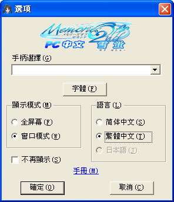

Memories Off 2nd Pure ∼ 秋之回憶2雪螢
for Windows
配置需求
遊戲安裝
啟動遊戲
操作方法
彈出菜單
標題畫面
選項菜單
★配置需求★
| OS |
Windows98SE/ME/XP/2000/2003（推薦XP以上） |
| CPU |
PentiumⅢ800MHz以上（推薦PentiumⅣ以上） |
| 內存 |
128MB以上（推薦256MB以上） |
| 顯卡 |
800×600，16位色以上（推薦24位色以上） |
| 硬盤空間 |
300MB以上 |
★遊戲安裝★
直接將壓縮包解壓到自己指定的遊戲目裡下即可。
需要安裝.net framework 1.1和directx 9c
★啟動遊戲★
直接運行遊戲目錄下的exe文件即可啟動遊戲。
啟動遊戲後會顯示啟動選項。
◆手柄選擇
選擇遊戲中使用的手柄，帶振動手柄會有振動效果
◆振動
對於可振動手柄指定是否在遊戲中振動。
◆字體
選擇遊戲中使用的字體
◆顯示模式
選擇使用全屏幕還是窗口模式啟動遊戲
◆語言
選擇啟動遊戲使用的語言
◆不再顯示
選擇是否以後不再顯示啟動選項（不再顯示的情況下會使用上一次的設定，手柄在存在的情況下自動選擇系統的第一個）
◆手冊
顯示此手冊 |
 |
★操作方法★
| 操作 |
鼠標 |
鍵盤 |
手柄 |
| 選擇選項 |
移動 |
上下左右鍵 |
XY軸（十字鍵或左搖桿） |
| 決定 |
左鍵 |
回車 |
按鈕1 |
| 取消 |
右鍵 |
空格 |
按鈕2 |
| 打開彈出菜單 |
右鍵 |
空格 |
|
| 返回標題畫面 |
|
|
按鈕10（PS樣式手柄Start鍵） |
| 快進 |
|
Ctrl |
|
| 隱藏文字窗口 |
|
F2 |
按鈕2 |
| 切換到快進模式 |
|
F3 |
按鈕3 |
| 自動播放 |
|
F4 |
按鈕4 |
| 打開設定選項 |
|
F8 |
按鈕9（PS樣式手柄Select鍵） |
| 語言切換 |
|
F12 |
|
| 切換畫面模式 |
|
Alt+Enter |
|
| 結束遊戲 |
|
Alt+F4 |
|
★彈出菜單★
| 返回 |
關閉菜單 |
| 選項菜單（F8） |
打開選項菜單 |
| 畫面模式（Alt+Enter） |
切換畫面模式（全屏模式、窗口模式）。 |
| 隱藏（F2） |
暫時隱藏隱藏文字窗口。 |
| 快進（F3） |
進入快進模式。 |
| 自動播放（F4） |
進入自動播放模式。 |
| 語言（F12） |
簡體中文 |
顯示簡體中文。 |
| 繁體中文 |
顯示繁體中文。 |
| 日本語 |
顯示日文。 |
| 字體 |
設定文字字體。 |
| 返回標題畫面 |
返回標題畫面。 |
| 遊戲結束（Alt+F4） |
結束遊戲。 |
★標題畫面★
| New Game |
從最初開始遊戲。 |
| Short Cut |
滿足條件後可從故事的中間開始遊戲。 |
| Option |
打開選項菜單。 |
| Album |
可以鑒賞遊戲中出現的CG。 |
| Exit |
結束遊戲。 |
★選項菜單★
| 畫面效果 |
淡入淡出 |
設定顯示各種淡入淡出效果以及縮放效果。 |
| 氣候環境 |
設定[雪]、[櫻花]等的效果。 |
| 陽光透射 |
設定[陽光]的效果。 |
| 畫面震動 |
設定[畫面震動]的效果。 |
| 窗口顏色 |
設定文字窗口的顏色。 |
| 文字速度 |
設定文字顯示的速度。 |
| 文字同步 |
語音同步 |
台詞中文字的顯示速度與相應的語音同步。 |
| 語音不同步 |
所有的文字都按照設定的速度顯示。 |
返回頂部
|